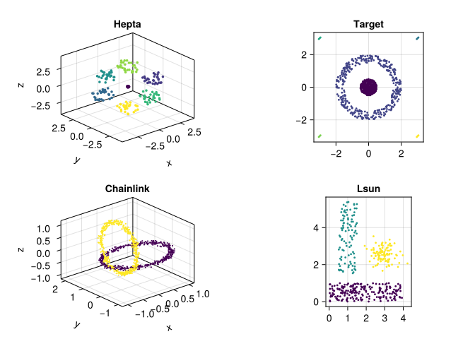
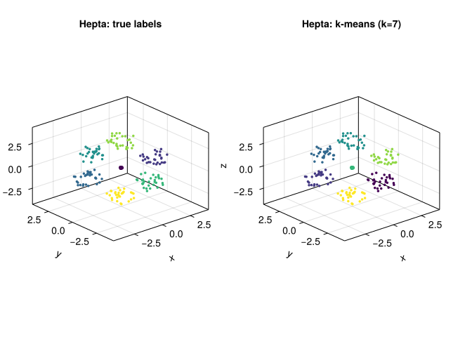
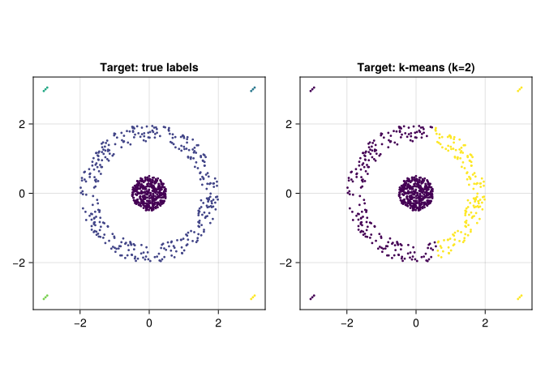
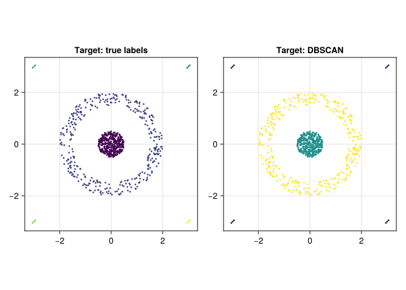
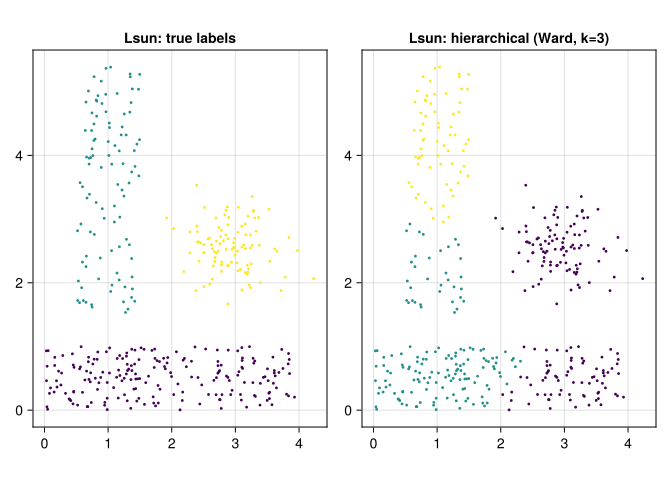

using DelimitedFiles
using CairoMakie
using Clustering
using Distances
using Random
using Statistics
using StatsBase: counts
Random.seed!(2026)TaskLocalRNG()“There are more things in heaven and earth, Horatio,
Than are dreamt of in your philosophy.”
— William Shakespeare, in “Hamlet”
Clustering is one of the most fundamental tasks in data analysis: given a dataset, group the points into meaningful subsets. It sounds simple, but the devil is in the details. What does “meaningful” mean? How many clusters should there be? And what shape can they have?
In this chapter we cover classical clustering methods, their strengths and limitations. They also supply useful baselines for the density-and-persistence approach of ToMATo. Topology does not relieve us of choosing what similarity should mean.
Definition 6.1 A clustering of a set \(X\) is a collection \(C_1, \ldots, C_n \subset X\) such that \(\bigcup C_i = X\) and \(C_i \cap C_j = \emptyset\) for any \(i \neq j\). In other words: it is a partition of \(X\) into disjoint subsets. Each \(C_i\) is called a cluster.
A clustering method assigns a label to each point, often after we choose a metric and parameters. Methods that allow unassigned points commonly reserve label 0 for noise. That is useful bookkeeping, but the noise points need not form one coherent cluster.
Let’s load some packages and datasets to work with:
using DelimitedFiles
using CairoMakie
using Clustering
using Distances
using Random
using Statistics
using StatsBase: counts
Random.seed!(2026)TaskLocalRNG()We will use several datasets from the FCPS suite (Ultsch and Lötsch 2020):
function load_fcps(name)
data = readdlm("clustering datasets/$name.csv", ',', Any)
points = permutedims(Float64.(data[2:end, 2:end]))
labels = Int.(data[2:end, 1])
return points, labels
end
# Load a few interesting ones
hepta_pts, hepta_labels = load_fcps("Hepta")
target_pts, target_labels = load_fcps("Target")
chainlink_pts, chainlink_labels = load_fcps("Chainlink")
lsun_pts, lsun_labels = load_fcps("Lsun")([3.277701 0.387577 … 2.404517 3.248655; 0.814082 0.17678 … 2.641618 2.297291], [1, 1, 1, 1, 1, 1, 1, 1, 1, 1 … 3, 3, 3, 3, 3, 3, 3, 3, 3, 3])Let’s visualize them:
fig = Figure(size = (800, 800))
ax1 = Axis3(fig[1, 1], title = "Hepta")
scatter!(ax1, hepta_pts[1,:], hepta_pts[2,:], hepta_pts[3,:],
color = hepta_labels, markersize = 5)
ax2 = Axis(fig[1, 2], title = "Target", aspect = DataAspect())
scatter!(ax2, target_pts[1,:], target_pts[2,:],
color = target_labels, markersize = 4)
ax3 = Axis3(fig[2, 1], title = "Chainlink")
scatter!(ax3, chainlink_pts[1,:], chainlink_pts[2,:], chainlink_pts[3,:],
color = chainlink_labels, markersize = 3)
ax4 = Axis(fig[2, 2], title = "Lsun", aspect = DataAspect())
scatter!(ax4, lsun_pts[1,:], lsun_pts[2,:],
color = lsun_labels, markersize = 4)
fig┌ Warning: Found `resolution` in the theme when creating a `Scene`. The `resolution` keyword for `Scene`s and `Figure`s has been deprecated. Use `Figure(; size = ...` or `Scene(; size = ...)` instead, which better reflects that this is a unitless size and not a pixel resolution. The key could also come from `set_theme!` calls or related theming functions. └ @ Makie ~/.julia/packages/Makie/UjJJY/src/scenes.jl:238

These are synthetic benchmark datasets, with labels supplied by their designers. Hepta has well-separated compact groups, Target combines a ring, a central population, and four tiny groups, Chainlink has interlocking loops, and Lsun has groups of different shapes and sizes. Labels make comparison possible; they do not turn every visually plausible partition into the same scientific question.
Our matrices have one point per column, and all examples use Euclidean distance. We retain the benchmark coordinates so that radius values can be compared with the later ToMATo chapter. For measurements in different units, an unscaled distance can be dominated by whichever coordinate has the largest numerical spread. Standardizing each feature to mean zero and standard deviation one is one possible remedy:
function standardize_features(M)
scales = std(M, dims = 2)
# A constant feature contributes no distance; avoid division by zero.
scales[scales .== 0] .= 1
(M .- mean(M, dims = 2)) ./ scales
end
# Optional alternative geometry; the examples below retain hepta_pts.
hepta_standardized = standardize_features(hepta_pts)3×212 Matrix{Float64}:
-0.047758 -0.00980065 -0.0462365 … -0.255978 -0.190987 -0.316565
-0.00386068 0.00839729 -0.0258983 -0.220726 0.0222075 0.239062
0.0357985 0.0643559 0.0544635 -1.74971 -2.21446 -1.57965Standardization is a modeling decision: it changes distances, neighborhoods, and clusters. Outliers can affect its mean and variance, and giving every feature equal variance can amplify irrelevant measurements. Record units, missing-value handling, and scaling before comparing algorithms. If you later evaluate a classifier, estimate these transformations on training data and reuse them on test data.
The most popular clustering algorithm is k-means. The idea is simple:
# K-means on Hepta (k=7, since we know there are 7 clusters)
result_hepta = kmeans(hepta_pts, 7)
km_labels_hepta = assignments(result_hepta)
fig = Figure(size = (800, 400))
ax1 = Axis3(fig[1, 1], title = "Hepta: true labels")
scatter!(ax1, hepta_pts[1,:], hepta_pts[2,:], hepta_pts[3,:],
color = hepta_labels, markersize = 5)
ax2 = Axis3(fig[1, 2], title = "Hepta: k-means (k=7)")
scatter!(ax2, hepta_pts[1,:], hepta_pts[2,:], hepta_pts[3,:],
color = km_labels_hepta, markersize = 5)
fig┌ Warning: Found `resolution` in the theme when creating a `Scene`. The `resolution` keyword for `Scene`s and `Figure`s has been deprecated. Use `Figure(; size = ...` or `Scene(; size = ...)` instead, which better reflects that this is a unitless size and not a pixel resolution. The key could also come from `set_theme!` calls or related theming functions. └ @ Makie ~/.julia/packages/Makie/UjJJY/src/scenes.jl:238

K-means minimizes the sum of squared Euclidean distances to the assigned centroids. Compact, separated groups suit this objective, so Hepta is a friendly first example. The algorithm does not formally assume that every cluster is a sphere, but its nearest-centroid assignment partitions the ambient space into convex Voronoi cells. What happens with less friendly shapes?
# A deliberate two-group model: this is not the benchmark's six labels.
result_target = kmeans(target_pts, 2)
km_labels_target = assignments(result_target)
fig = Figure(size = (800, 400))
ax1 = Axis(fig[1, 1], title = "Target: true labels", aspect = DataAspect())
scatter!(ax1, target_pts[1,:], target_pts[2,:],
color = target_labels, markersize = 4)
ax2 = Axis(fig[1, 2], title = "Target: k-means (k=2)", aspect = DataAspect())
scatter!(ax2, target_pts[1,:], target_pts[2,:],
color = km_labels_target, markersize = 4)
fig┌ Warning: Found `resolution` in the theme when creating a `Scene`. The `resolution` keyword for `Scene`s and `Figure`s has been deprecated. Use `Figure(; size = ...` or `Scene(; size = ...)` instead, which better reflects that this is a unitless size and not a pixel resolution. The key could also come from `set_theme!` calls or related theming functions. └ @ Makie ~/.julia/packages/Makie/UjJJY/src/scenes.jl:238

This two-centroid fit cuts across the ring. A nearest-centroid boundary cannot separate a ring from an enclosed core. Notice also that we requested two groups, whereas Target has six benchmark labels: the four tiny groups count too. Compare results using the same objective and number of requested groups before declaring a winner.
Limitations of k-means:
DBSCAN (Density-Based Spatial Clustering of Applications with Noise) builds clusters through connected chains of dense neighborhoods (Ester et al. 1996).
Conventional DBSCAN has two main parameters, the neighborhood radius and the core-point count. This package exposes an additional rule for accepting a finished cluster:
min_neighbors: the minimum neighborhood count required for a core point (the package counts the point itself)min_cluster_size: the minimum accepted size of a resulting cluster# DBSCAN on Target
D_target = pairwise(Euclidean(), target_pts, dims = 2)
result_db = dbscan(D_target, 0.5; metric = nothing,
min_neighbors = 10, min_cluster_size = 10)
# dbscan returns a DbscanResult; extract cluster assignments
db_labels = zeros(Int, size(target_pts, 2))
for (i, cluster) in enumerate(result_db.clusters)
db_labels[cluster.core_indices] .= i
db_labels[cluster.boundary_indices] .= i
end
fig = Figure(size = (800, 400))
ax1 = Axis(fig[1, 1], title = "Target: true labels", aspect = DataAspect())
scatter!(ax1, target_pts[1,:], target_pts[2,:],
color = target_labels, markersize = 4)
ax2 = Axis(fig[1, 2], title = "Target: DBSCAN", aspect = DataAspect())
scatter!(ax2, target_pts[1,:], target_pts[2,:],
color = db_labels, markersize = 4)
fig┌ Warning: Found `resolution` in the theme when creating a `Scene`. The `resolution` keyword for `Scene`s and `Figure`s has been deprecated. Use `Figure(; size = ...` or `Scene(; size = ...)` instead, which better reflects that this is a unitless size and not a pixel resolution. The key could also come from `set_theme!` calls or related theming functions. └ @ Makie ~/.julia/packages/Makie/UjJJY/src/scenes.jl:238

metric = nothing tells this API that the input is already a distance matrix. Without it, the columns would be interpreted as observations in a different space. Alternatively, pass target_pts with metric = Euclidean() and the same radius and count settings.
DBSCAN permits non-convex clusters and does not require a requested cluster count. Its count still depends on radius and density thresholds. The plotting label 0 marks unassigned points, which can be scattered across the figure.
Limitations of DBSCAN:
Hierarchical clustering builds a tree (called a dendrogram) that shows how points are progressively merged into clusters:
The “distance between clusters” can be defined in several ways (single linkage, complete linkage, average linkage, Ward’s method, etc.).
# Hierarchical clustering on Lsun
D_lsun = pairwise(Euclidean(), lsun_pts, dims = 2)
hc = hclust(D_lsun, linkage = :ward)
# Cut at 3 clusters
hc_labels = cutree(hc, k = 3)
fig = Figure(size = (800, 400))
ax1 = Axis(fig[1, 1], title = "Lsun: true labels", aspect = DataAspect())
scatter!(ax1, lsun_pts[1,:], lsun_pts[2,:],
color = lsun_labels, markersize = 4)
ax2 = Axis(fig[1, 2], title = "Lsun: hierarchical (Ward, k=3)", aspect = DataAspect())
scatter!(ax2, lsun_pts[1,:], lsun_pts[2,:],
color = hc_labels, markersize = 4)
fig┌ Warning: Found `resolution` in the theme when creating a `Scene`. The `resolution` keyword for `Scene`s and `Figure`s has been deprecated. Use `Figure(; size = ...` or `Scene(; size = ...)` instead, which better reflects that this is a unitless size and not a pixel resolution. The key could also come from `set_theme!` calls or related theming functions. └ @ Makie ~/.julia/packages/Makie/UjJJY/src/scenes.jl:238

Ward’s method merges groups to control the increase in within-group squared Euclidean variation. Its geometric interpretation depends on Euclidean input; replacing the distance matrix by an arbitrary dissimilarity does not preserve that interpretation. Other linkages answer different questions.
The dendrogram encodes a nested sequence of partitions. Single linkage has a precise connection to \(H_0\) persistence of the Rips filtration: at radius \(r\), its clusters are the components of the graph joining points at distance at most \(r\). Ward, complete, and average linkage do not have this correspondence. An \(H_0\) barcode records merge scales, but loses the information about which labeled points merged that the dendrogram retains.
hc_single = hclust(D_lsun, linkage = :single)
(ward_sizes = counts(hc_labels),
single_sizes = counts(cutree(hc_single, k = 3)))(ward_sizes = [177, 157, 66], single_sizes = [200, 100, 100])Single linkage follows chains of short edges and can therefore connect distant populations through a few intermediate points. This is useful for some geometries and a nuisance for others.
Each of the methods above has assumptions that can fail:
| Method | What we choose; common difficulty |
|---|---|
| K-means | \(k\), scaling, initialization; nested or elongated groups |
| DBSCAN | Radius and neighborhood counts; a shared threshold can struggle with very different densities |
| Hierarchical | Metric, linkage, cut level; the linkage controls which merges are favored |
| ToMATo | Density bandwidth, proximity graph, peak lifetime and height thresholds; errors in any ingredient propagate |
ToMATo combines mode seeking with persistence-based merging. It gives us a plot of peak lifetimes that helps inspect a choice of threshold; it still needs parameters and can still disagree with the benchmark labels. First, we need to understand persistent homology so that the diagnostic has a clear meaning.
A difference in that coordinate contributes 10,000 times as much to squared Euclidean distance. Radius neighborhoods shrink in that direction, and k-means prioritizes fitting that coordinate. Standardization restores the original relative scales only if equal feature variance is the intended geometry.
No. Noise is a rule for points that do not satisfy the chosen density conditions; it need not be connected. A fitted cluster is a group under the chosen metric and objective. A population interpretation requires relevant measurements and validation outside the algorithm.
Single linkage matches the connected components and their merge scales. Its labeled tree also records which points and clusters merge. The barcode retains the scales and multiplicities, not those memberships.